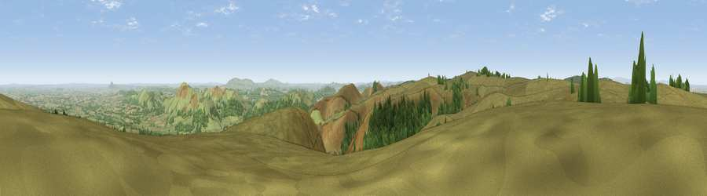

Viewpoint near All Stretton
#3319 in England · top 9% of its area beats it · near All StrettonThe view, rendered

A 360° render of this exact spot computed from the terrain model, tree cover and land cover — summer colours, afternoon light, calibrated against photographs of famous viewpoints. Real trees, hedges and buildings will differ in detail.
The panorama
Grey silhouette: terrain skyline in each direction (720 bearings, Earth curvature and refraction included). Dashed green: skyline with trees (+15 m) and buildings (+8 m) as obstacles. Blue strip: how far the ground is visible on each bearing.
Where the view opens
Wedge length = distance to the farthest visible ground on that bearing (vegetation-aware). Rings at 10, 25 and 50 km.
What fills the view
71% grassland · 21% woodland · 8% cropland ·
Angular shares of the visible panorama (visual magnitude), not map area. Landscape diversity 0.35 (0–1 Shannon).
Key numbers
More beautiful places nearby
The staircase of upgrades: each row has a higher view potential than everything closer. Driving times are estimates from straight-line distance, calibrated against real road routing — check an actual route before setting out.
| Place | Direction | Drive | Score |
|---|---|---|---|
| Yearlet | S · 2 km | ~6 min | 74.4 |
| Pole Bank | WSW · 2 km | ~6 min | 74.7 |
| Ragleth Hill | SSE · 4 km | ~9 min | 78.6 |
| Caer Caradoc Hill | E · 4 km | ~9 min | 81.7 |
| The Lawley | ENE · 6 km | ~13 min | 85.8 |
| Viewpoint near Little Wenlock | ENE · 23 km | ~37 min | 86.6 |
| North Hill | SE · 59 km | ~82 min | 86.8 |
| Worcestershire Beacon | SE · 60 km | ~83 min | 87.1 |
52.55575, -2.83312 · source: screening · position refined by local search. Computed location — check access rights before visiting.